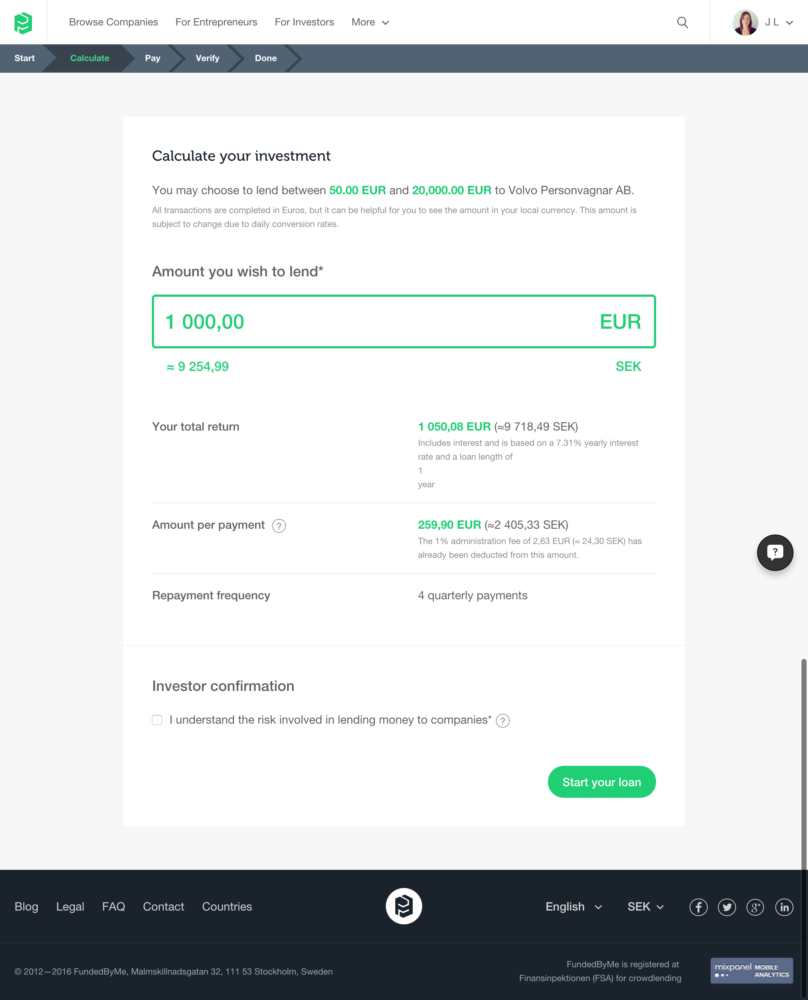

New product for FundedByMe - Entrepreneurs applying for business loans and Investors going through a secure identification process. I find that having UX goals for each project can make it easier for decisions to be made. Both to assess whether a feature is necessary and also to discuss with other stakeholders the value of features against these objectives.
This product involved investors lending to companies, entrepreneurs applying for loans and repayments from both investors and entrepreneurs. There were many scenarios to work through from a UX and developement perspective.
An entrepreneur wants to check the interest rate offered for their company
They can play with the calculator to view different options
An investor calculates their possible return
Payment process - after testing the product, the process was changed to allow payment first and then the identification process afterwards. This vastly increased the amount of investments.
Investor identification process
Repayments section - loan summary for lender